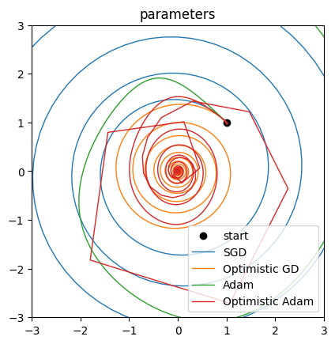
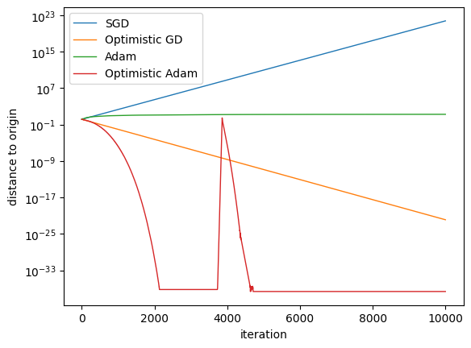

Optimistic Gradient Descent in a Bilinear Min-Max Problem#

import functools
import jax
import optax
import matplotlib.pyplot as plt
from jax import lax, numpy as jnp
Consider the following min-max problem:
where \(f: \mathbb R^m \times \mathbb R^n \to \mathbb R\) is a convex-concave function. The solution to such a problem is a saddle-point \((x^\star, y^\star)\in \mathbb R^m \times \mathbb R^n\) such that
Standard gradient descent-ascent (GDA) updates \(x\) and \(y\) according to the following update rule at step \(k\):
where \(\eta_k\) is a step size. However, it’s well-documented that GDA can fail to converge in this setting. This is an important issue because gradient-based min-max optimization is increasingly prevalent in machine learning (e.g., GANs, constrained RL). Optimistic GDA (OGDA) addresses this shortcoming by introducing a form of memory-based negative momentum:
Thus, to implement OGD (or OGA), the optimizer needs to keep track of the gradient from the previous step. OGDA has been formally shown to converge to the optimum \((x_k, y_k) \to (x^\star, y^\star)\) in this setting. The generalised form of the OGDA update rule is given by
which recovers standard OGDA when \(\alpha=\beta=1\). See Mokhtari et al., 2019 for more details.
where \(\eta_k\) is a step size. However, it’s well-documented that GDA can fail to converge in this setting. This is an important issue because gradient-based min-max optimization is increasingly prevalent in machine learning (e.g., GANs, constrained RL). Optimistic GDA (OGDA) addresses this shortcoming by introducing a form of memory-based negative momentum:
We will now show an example. First, we define our function \(f\):
def f(params):
x, y = params
return x * y
Second, we define our helper functions:
def update(optimizer, state, _):
params, opt_state = state
grads = jax.grad(f)(params)
grads = grads.at[1].apply(jnp.negative)
updates, new_opt_state = optimizer.update(grads, opt_state, params)
new_params = optax.apply_updates(params, updates)
return (new_params, new_opt_state), params
def optimize(optimizer, params, iters):
opt_state = optimizer.init(params)
_, params_hist = lax.scan(functools.partial(update, optimizer), (params, opt_state), length=iters)
return params_hist
Third, we run our optimizers and plot the results.
_, ax_params = plt.subplots()
_, ax_distances = plt.subplots()
params = jnp.array([1.0, 1.0])
ax_params.scatter(*params, label="start", color="black")
for label, optimizer in [
("SGD", optax.sgd(0.1)),
("Optimistic GD", optax.optimistic_gradient_descent(0.1)),
("Adam", optax.adam(0.05, nesterov=True)),
("Optimistic Adam", optax.optimistic_adam(0.05, 0.5, nesterov=True)),
]:
params_hist = optimize(optimizer, params, 10**4)
distances_to_origin = jnp.hypot(*params_hist.T)
ax_params.plot(*params_hist.T, label=label, lw=1)
ax_distances.plot(distances_to_origin, label=label, lw=1)
ax_params.legend()
ax_distances.legend()
ax_params.set(title="parameters", aspect="equal", xlim=(-3, 3), ylim=(-3, 3))
ax_distances.set(xlabel="iteration", ylabel="distance to origin", yscale="log")
plt.show()

